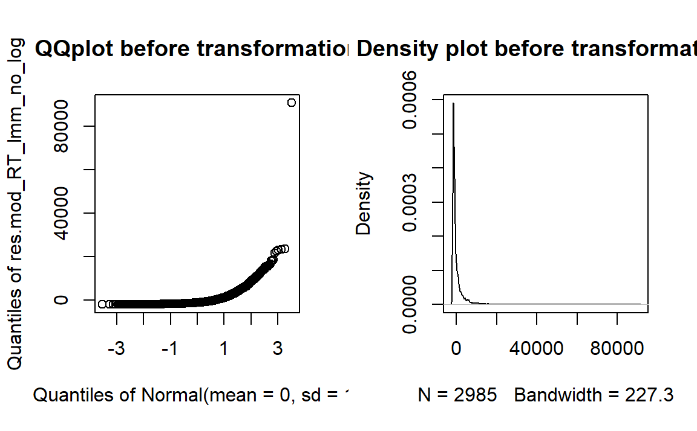

Task description
Our EEG paradigm was a delayed match-to-sample task in which children had do indicate whether Face 1 and Face 2 showed the same (repeated) or a different emotional facial expression (novel). Besides their EEG, we measured participants’ accuracy rates and reaction times.
We excluded reaction times < 250 ms and incorrect trials. Subsequently, we calculated general linear mixed models (GLMM) for accuracy rates and linear mixed models (LMM) for reaction times. Fixed effects are defined for each model individually. As fixed factors, all models included treatment contrasts for facial expressions (emotional [average of happy/angry] vs. neutral faces (Emo_Neu), happy vs. angry faces (Hap_Ang)), repetition (novel vs. repeated emotion trials (Rep_Nov)) as well as their interaction (Emo_NeuxRep_Nov, Hap_AngxRep_Nov). Due to the high cognitive task demands, working memory (WM_scal) was entered as scaled covariate in all (general) linear mixed model analyses. The random effects structure included random intercepts for participants (1|ID) and stimulus (1|Stim_Type). Assumptions for multiple regression were checked for all models (normality of the residuals, linearity, multicollinearity, homoscedasticity).
We expected children to be faster and more accurate when Face 1 and Face 2 showed different emotions. Additionally, we expected the highest accuracy rates and fastest reaction times for pairings with happy facial expressions.
Accuracy & Reaction times
Descriptive statistics
Accuracy rates (left side) and reaction times (right side) of the delayed match-to-sample task. Error bars indicate standard errors (SE).
## Plot accuracy rates
EEG_task_Acc_plot = subset(EEG_task_data, Exclude_smaller_250ms == FALSE & Response ==
1)
# Rename variables
EEG_task_Acc_plot$Cong[EEG_task_Acc_plot$Cong == 1] = "repeated"
EEG_task_Acc_plot$Cong[EEG_task_Acc_plot$Cong == 2] = "novel"
EEG_task_Acc_plot$Target[EEG_task_Acc_plot$Target == 4] = "happy"
EEG_task_Acc_plot$Target[EEG_task_Acc_plot$Target == 5] = "neutral"
EEG_task_Acc_plot$Target[EEG_task_Acc_plot$Target == 6] = "angry"
EEG_task_Acc_plot$Target[EEG_task_Acc_plot$Target == 7] = "happy"
EEG_task_Acc_plot$Target[EEG_task_Acc_plot$Target == 8] = "neutral"
EEG_task_Acc_plot$Target[EEG_task_Acc_plot$Target == 9] = "angry"
# Get accuracy for novel and repeated Target
acc_all = data.frame(xtabs(~ID + Cong + Target, EEG_task_Acc_plot))
# Recode to accuracy in percent (72 novel trials, 72 repeated trials, divided by
# three for three emotion conditions)
acc_all$Freq = (acc_all$Freq/24) * 100
# Factor Target
acc_all$Cong = as.factor(acc_all$Cong)
acc_all$Target = as.factor(acc_all$Target)
# Calculate descriptives on accuracy
stats_acc_all = summarySEwithin(acc_all, measurevar = "Freq", withinvars = c("Cong",
"Target"), idvar = "ID")
# Plot accuracy
EEG_acc_plot = ggplot(stats_acc_all, aes(x = Target, y = Freq, fill = Cong)) + geom_bar(position = position_dodge(),
stat = "identity", colour = "black", size = 0.4, width = 0.9) + geom_errorbar(aes(ymin = Freq -
se, ymax = Freq + se), size = 0.4, width = 0.2, position = position_dodge(0.9)) +
labs(x = "", y = "Accuracy [%]") + scale_fill_manual(name = "Repetition", values = nov_col) +
coord_cartesian(ylim = c(0, 80)) + scale_y_continuous(breaks = seq(0, 100, 20)) +
theme_bw() + theme_SN + theme(legend.position = "top", legend.direction = "vertical",
legend.key.size = unit(1, "cm"), legend.key.width = unit(0.5, "cm"))
## RT plot
# Choose outlier-free and correct trial data
EEG_task_RT_plot = subset(EEG_task_data, Exclude_smaller_250ms == FALSE & Response ==
1)
# Rename variables
EEG_task_RT_plot$Cong[EEG_task_RT_plot$Cong == 1] = "repeated"
EEG_task_RT_plot$Cong[EEG_task_RT_plot$Cong == 2] = "novel"
EEG_task_RT_plot$Target[EEG_task_RT_plot$Target == 4] = "happy"
EEG_task_RT_plot$Target[EEG_task_RT_plot$Target == 5] = "neutral"
EEG_task_RT_plot$Target[EEG_task_RT_plot$Target == 6] = "angry"
EEG_task_RT_plot$Target[EEG_task_RT_plot$Target == 7] = "happy"
EEG_task_RT_plot$Target[EEG_task_RT_plot$Target == 8] = "neutral"
EEG_task_RT_plot$Target[EEG_task_RT_plot$Target == 9] = "angry"
stats_RT_all = summarySEwithin(EEG_task_RT_plot, measurevar = "RTs", withinvars = c("Cong",
"Target"), idvar = "ID")
# Plot RTs
EEG_RT_plot = ggplot(stats_RT_all, aes(x = Target, y = RTs, fill = Cong)) + geom_bar(position = position_dodge(),
stat = "identity", colour = "black", size = 0.4, width = 0.9) + geom_errorbar(aes(ymin = RTs -
se, ymax = RTs + se), size = 0.4, width = 0.2, position = position_dodge(0.9)) +
labs(x = "", y = "RT [ms]") + coord_cartesian(ylim = c(0, 3000)) + scale_y_continuous(breaks = seq(0,
3000, 500)) + scale_fill_manual(values = nov_col) + theme_bw() + theme_SN + theme(legend.position = "none",
legend.title = element_blank())
# Put plots together
plots_Acc_RT = cowplot::plot_grid(EEG_acc_plot + theme(legend.position = "none"),
EEG_RT_plot + theme(legend.position = "none"), align = "vh", hjust = -1, nrow = 1)
# Get legend
legend_Acc_RT = get_legend(EEG_acc_plot + theme(legend.box.margin = margin(0, 0,
0, 2)))
# Display plot: https://wilkelab.org/cowplot/articles/shared_legends.html
fig_EEG_Acc_RT = cowplot::plot_grid(plots_Acc_RT, legend_Acc_RT, rel_widths = c(1,
0.2))
fig_EEG_Acc_RT# Save figure for publication ggsave('Figure_X_DMTST_perf.tiff', plot =
# last_plot(), dpi = 300)Model specifications
Accuray rate GLMM:
Random effect structure
We fitted single-trial data to the following model:
# Select outlier-free data
EEG_task_Acc_glmm = subset(EEG_task_data, Exclude_smaller_250ms == FALSE)
# Scale working memory
EEG_task_data$WM_scal = scale(EEG_task_data$WM)
# Factor random effects
EEG_task_Acc_glmm$ID = as.factor(EEG_task_Acc_glmm$ID)
EEG_task_Acc_glmm$Stim_Type = as.factor(EEG_task_Acc_glmm$Stim_Type)
# Define novel vs repeated trials
EEG_task_Acc_glmm$Target[EEG_task_Acc_glmm$Target == 4] = "c_happy"
EEG_task_Acc_glmm$Target[EEG_task_Acc_glmm$Target == 5] = "c_neutral"
EEG_task_Acc_glmm$Target[EEG_task_Acc_glmm$Target == 6] = "c_angry"
EEG_task_Acc_glmm$Target[EEG_task_Acc_glmm$Target == 7] = "ic_happy"
EEG_task_Acc_glmm$Target[EEG_task_Acc_glmm$Target == 8] = "ic_neutral"
EEG_task_Acc_glmm$Target[EEG_task_Acc_glmm$Target == 9] = "ic_angry"
# Create one variable for emotion and one for repetition
EEG_task_Acc_glmm$emot[(EEG_task_Acc_glmm$Target == "c_happy") | (EEG_task_Acc_glmm$Target ==
"ic_happy")] = 1
EEG_task_Acc_glmm$emot[(EEG_task_Acc_glmm$Target == "c_angry") | (EEG_task_Acc_glmm$Target ==
"ic_angry")] = 2
EEG_task_Acc_glmm$emot[(EEG_task_Acc_glmm$Target == "c_neutral") | (EEG_task_Acc_glmm$Target ==
"ic_neutral")] = 3
EEG_task_Acc_glmm$rep[(EEG_task_Acc_glmm$Target == "c_happy") | (EEG_task_Acc_glmm$Target ==
"c_angry") | (EEG_task_Acc_glmm$Target == "c_neutral")] = 1
EEG_task_Acc_glmm$rep[(EEG_task_Acc_glmm$Target == "ic_happy") | (EEG_task_Acc_glmm$Target ==
"ic_angry") | (EEG_task_Acc_glmm$Target == "ic_neutral")] = 2
# Rename variables
EEG_task_Acc_glmm$emot[EEG_task_Acc_glmm$emot == 1] = "happy"
EEG_task_Acc_glmm$emot[EEG_task_Acc_glmm$emot == 2] = "angry"
EEG_task_Acc_glmm$emot[EEG_task_Acc_glmm$emot == 3] = "neutral"
EEG_task_Acc_glmm$rep[EEG_task_Acc_glmm$rep == 1] = "repeated"
EEG_task_Acc_glmm$rep[EEG_task_Acc_glmm$rep == 2] = "novel"
# Factor emotion and repetition variable
EEG_task_Acc_glmm$rep = factor(EEG_task_Acc_glmm$rep)
EEG_task_Acc_glmm$emot = factor(EEG_task_Acc_glmm$emot)
# Create contrasts
contrasts(EEG_task_Acc_glmm$rep) = c(-0.5, 0.5) # intercept is the mean of happy and angry
contrasts(EEG_task_Acc_glmm$emot) = contr.treatment(3, base = 3)
# A = angry, N = neutral, H = happy
HvsA = c(0.5, -0.5, 0) # compare: happy vs. angry
EvsN = c(-0.25, -0.25, 0.5) # compare happy/angry to neutral
contrasts(EEG_task_Acc_glmm$emot) = cbind(EvsN, HvsA)
# Final model
mod_Acc_EEG.glmm = glmer(Response ~ emot * rep + WM_scal + (1 | ID) + (1 | Stim_Type),
data = EEG_task_Acc_glmm, control = glmerControl(calc.derivs = FALSE), family = binomial)Response ~ emot * rep + WM_scal + (1 | ID) + (1 | Stim_Type)
Overdispersion
If the p-value is < 0.05, data would be overdispersed. Here p > 0.05. Hence, overdispersion is not a problem.
# Assumption check: Appropriate estimation of variance - check for overdispersion
overdisp_fun(mod_Acc_EEG.glmm) chisq ratio rdf p
3675.268 0.951 3866.000 0.986 Reaction time LMM:
Random effect structure
The final model was:
# Choose outlier-free data and correct answers
EEG_task_RT_lmm = subset(EEG_task_data, Response == 1 & Exclude_smaller_250ms ==
FALSE)
# Define novel vs repeated trials
EEG_task_RT_lmm$Target[EEG_task_RT_lmm$Target == 4] = "c_happy"
EEG_task_RT_lmm$Target[EEG_task_RT_lmm$Target == 5] = "c_neutral"
EEG_task_RT_lmm$Target[EEG_task_RT_lmm$Target == 6] = "c_angry"
EEG_task_RT_lmm$Target[EEG_task_RT_lmm$Target == 7] = "ic_happy"
EEG_task_RT_lmm$Target[EEG_task_RT_lmm$Target == 8] = "ic_neutral"
EEG_task_RT_lmm$Target[EEG_task_RT_lmm$Target == 9] = "ic_angry"
# Create one variable for emotion and one for repetition
EEG_task_RT_lmm$emot[(EEG_task_RT_lmm$Target == "c_happy") | (EEG_task_RT_lmm$Target ==
"ic_happy")] = 1
EEG_task_RT_lmm$emot[(EEG_task_RT_lmm$Target == "c_angry") | (EEG_task_RT_lmm$Target ==
"ic_angry")] = 2
EEG_task_RT_lmm$emot[(EEG_task_RT_lmm$Target == "c_neutral") | (EEG_task_RT_lmm$Target ==
"ic_neutral")] = 3
EEG_task_RT_lmm$rep[(EEG_task_RT_lmm$Target == "c_happy") | (EEG_task_RT_lmm$Target ==
"c_angry") | (EEG_task_RT_lmm$Target == "c_neutral")] = 1
EEG_task_RT_lmm$rep[(EEG_task_RT_lmm$Target == "ic_happy") | (EEG_task_RT_lmm$Target ==
"ic_angry") | (EEG_task_RT_lmm$Target == "ic_neutral")] = 2
# Rename variables
EEG_task_RT_lmm$emot[EEG_task_RT_lmm$emot == 1] = "happy"
EEG_task_RT_lmm$emot[EEG_task_RT_lmm$emot == 2] = "angry"
EEG_task_RT_lmm$emot[EEG_task_RT_lmm$emot == 3] = "neutral"
EEG_task_RT_lmm$rep[EEG_task_RT_lmm$rep == 1] = "repeated"
EEG_task_RT_lmm$rep[EEG_task_RT_lmm$rep == 2] = "novel"
# Factor variables
EEG_task_RT_lmm$rep = factor(EEG_task_RT_lmm$rep)
EEG_task_RT_lmm$emot = factor(EEG_task_RT_lmm$emot)
# Create contrasts
contrasts(EEG_task_RT_lmm$emot) = contr.treatment(3, base = 3)
contrasts(EEG_task_RT_lmm$rep) = c(-0.5, 0.5)
# A = angry, N = neutral, H = happy
HvsA = c(0.5, -0.5, 0) # compare: happy vs. angry
EvsN = c(-0.25, -0.25, 0.5) # compare happy/angry to neutral
contrasts(EEG_task_RT_lmm$emot) = cbind(EvsN, HvsA)
mod_RT_EEG.lmer = lmer(log(RTs) ~ emot * rep + WM_scal + (1 | ID) + (1 | Stim_Type),
data = EEG_task_RT_lmm, control = lmerControl(calc.derivs = FALSE))log(RTs) ~ emot * rep + WM_scal + (1 | ID) + (1 | Stim_Type)
Normality of residuals
RTs were log-transformed (determined using the Box-Cox procedure) to meet the assumption of normally distributed residuals.
# Visualize normality assumption of residuals (without log transform)
mod_RT_lmm_no_log = lm(RTs ~ Cong, data = EEG_task_RT_lmm)
res.mod_RT_lmm_no_log = residuals(mod_RT_lmm_no_log)
par(mfrow = c(1, 2))
qqpl_RT_lmm_no_log = qqPlot(res.mod_RT_lmm_no_log, main = "QQplot before transformation")
norm_RT_lmm_no_log = plot(density(res.mod_RT_lmm_no_log), main = "Density plot before transformation")
par(mfrow = c(1, 1))
# Check which transformation of DV is suitable
# Calculate box-cox plot
mod_RT_targ = lm(RTs ~ Cong, data = EEG_task_RT_lmm)
boxcox(mod_RT_targ)
# Visualize normality assumption of residuals (with log transform)
mod_RT_lmm_log = lm(log(RTs) ~ Cong, data = EEG_task_RT_lmm)
res.mod_RT_lmm_log = residuals(mod_RT_lmm_log)
par(mfrow = c(1, 2))
qqpl_RT_lmm_log = qqPlot(res.mod_RT_lmm_log, main = "QQplot after transformation")
norm_RT_lmm_log = plot(density(res.mod_RT_lmm_log), main = "Density plot after transformation")
par(mfrow = c(1, 1))Homoscedasticity
We assume homoscedasticity based on visual inspection.
# Check homoscedasticity
plot(fitted(mod_RT_EEG.lmer), residuals(mod_RT_EEG.lmer))
abline(0, 0)
Results
# Calculate post-hoc tests
EEG_task_RT_lmm$interaction = interaction(EEG_task_RT_lmm$rep, EEG_task_RT_lmm$emot)
mod_RT_EEG.lmer_model = lmer(log(RTs) ~ interaction + WM_scal + (1 | ID) + (1 | Stim_Type),
data = EEG_task_RT_lmm, control = lmerControl(calc.derivs = FALSE))
# Choose contrasts of interest / add fdr-correction
# Choose contrasts of interest / add fdr-correction
mod_RT_EEG.lmer_model_posthoc = summary(glht(mod_RT_EEG.lmer_model, linfct = mcp(interaction = c("repeated.neutral - repeated.angry = 0",
"novel.neutral - novel.angry = 0", "novel.neutral - novel.happy = 0", "repeated.neutral - repeated.happy = 0")),
test = adjusted(type = "fdr")))
# Get ready for presentation in RMarkdown
tab1 = merge(as.data.frame(mod_RT_EEG.lmer_model_posthoc$test$coefficients), as.data.frame(mod_RT_EEG.lmer_model_posthoc$test$sigma),
by = 0)
tab2 = as.data.frame(mod_RT_EEG.lmer_model_posthoc$test$pvalues)
rownames(tab2) = rownames(as.data.frame(mod_RT_EEG.lmer_model_posthoc$test$tstat))
tab2 = merge(as.data.frame(mod_RT_EEG.lmer_model_posthoc$test$tstat), tab2, by = 0)
post_hoc_tests_EEG_RT = merge(tab1, tab2, by = "Row.names")
colnames(post_hoc_tests_EEG_RT) = c("Contrast", "Est.", "Std. Error", "z value",
"p value")# Create labels
labels = c("Emotion vs. Neutral", "Happy vs. Angry", "Repetition", "Working Memory",
"E vs. N x Repetition ", "H vs. A x Repetition")
# Create table
tab_model(mod_Acc_EEG.glmm, mod_RT_EEG.lmer, show.intercept = FALSE, pred.labels = labels,
show.ci = FALSE, show.se = TRUE, string.se = "SE", show.stat = TRUE, string.stat = "t",
show.re.var = TRUE, show.obs = FALSE, emph.p = TRUE, dv.labels = c("Accuracy",
"Reaction time"), show.icc = TRUE)| Accuracy | Reaction time | |||||||
|---|---|---|---|---|---|---|---|---|
| Predictors | Odds Ratios | SE | t | p | Estimates | SE | t | p |
| Emotion vs. Neutral | 1.00 | 0.11 | 0.03 | 0.974 | 0.05 | 0.05 | 1.01 | 0.311 |
| Happy vs. Angry | 0.85 | 0.08 | -1.79 | 0.074 | 0.09 | 0.04 | 2.14 | 0.032 |
| Repetition | 0.99 | 0.08 | -0.07 | 0.946 | -0.02 | 0.03 | -0.55 | 0.586 |
| Working Memory | 0.84 | 0.13 | -1.14 | 0.255 | 0.06 | 0.06 | 1.00 | 0.319 |
| E vs. N x Repetition | 1.25 | 0.27 | 1.05 | 0.294 | -0.20 | 0.09 | -2.18 | 0.030 |
| H vs. A x Repetition | 1.30 | 0.24 | 1.38 | 0.169 | -0.11 | 0.08 | -1.31 | 0.189 |
| Random Effects | ||||||||
| σ2 | 3.29 | 0.71 | ||||||
| τ00 | 0.03 Stim_Type | 0.01 Stim_Type | ||||||
| 0.60 ID | 0.10 ID | |||||||
| ICC | 0.16 | 0.14 | ||||||
| N | 28 ID | 28 ID | ||||||
| 72 Stim_Type | 72 Stim_Type | |||||||
| Marginal R2 / Conditional R2 | 0.010 / 0.169 | 0.009 / 0.144 | ||||||
Note: p-values for the fixed effects calculated using Wald-statistics approximation, uncorrected. SE: standard error; t: test statistic coefficient; p: p-value; σ2: within-group variance; τ00: between-group variance; ICC: interclass correlation (ratio of between-cluster variance to total variance); N: number of random effects.
Post-hoc tests for Reaction time: Emotional vs. Neutral faces vs Repetition contrast
# Create table
kable(post_hoc_tests_EEG_RT) %>%
kable_styling(bootstrap_options = c("hover"), font_size = 14, fixed_thead = T)| Contrast | Est. | Std. Error | z value | p value |
|---|---|---|---|---|
| novel.neutral - novel.angry | 0.041 | 0.057 | 0.724 | 0.904 |
| novel.neutral - novel.happy | 0.180 | 0.056 | 3.205 | 0.005 |
| repeated.neutral - repeated.angry | -0.057 | 0.057 | -0.998 | 0.753 |
| repeated.neutral - repeated.happy | -0.024 | 0.056 | -0.434 | 0.984 |
Session info
# Get session info
sessionInfo()R version 4.0.2 (2020-06-22)
Platform: x86_64-w64-mingw32/x64 (64-bit)
Running under: Windows 10 x64 (build 19042)
Matrix products: default
locale:
[1] LC_COLLATE=German_Germany.1252 LC_CTYPE=German_Germany.1252
[3] LC_MONETARY=German_Germany.1252 LC_NUMERIC=C
[5] LC_TIME=German_Germany.1252
attached base packages:
[1] stats graphics grDevices utils datasets methods base
other attached packages:
[1] forcats_0.5.1 stringr_1.4.0 purrr_0.3.4 readr_1.4.0
[5] tidyr_1.1.3 tibble_3.1.1 tidyverse_1.3.1 sjlabelled_1.1.7
[9] sjmisc_2.8.6 sjPlot_2.8.7 Rmisc_1.5 plyr_1.8.6
[13] reshape2_1.4.4 psych_2.1.3 multcomp_1.4-16 TH.data_1.0-10
[17] mvtnorm_1.1-1 MASS_7.3-53.1 lmerTest_3.1-3 lme4_1.1-26
[21] Matrix_1.3-2 Hmisc_4.5-0 Formula_1.2-4 survival_3.2-10
[25] lattice_0.20-41 ggstatsplot_0.7.2 ggplot2_3.3.3 ez_4.4-0
[29] EnvStats_2.4.0 dplyr_1.0.5 cowplot_1.1.1 summarytools_0.9.9
[33] miceadds_3.11-6 mice_3.13.0 rmdformats_1.0.2 XLConnect_1.0.3
[37] kableExtra_1.3.4
loaded via a namespace (and not attached):
[1] utf8_1.2.1 tidyselect_1.1.0 htmlwidgets_1.5.3
[4] grid_4.0.2 gmp_0.6-2 munsell_0.5.0
[7] codetools_0.2-18 effectsize_0.4.4-1 statmod_1.4.35
[10] withr_2.4.2 colorspace_2.0-0 highr_0.9
[13] knitr_1.32 rstudioapi_0.13 ipmisc_6.0.0
[16] ggsignif_0.6.1 rJava_0.9-13 emmeans_1.5.5-1
[19] mnormt_2.0.2 farver_2.1.0 coda_0.19-4
[22] vctrs_0.3.7 generics_0.1.0 xfun_0.22
[25] BWStest_0.2.2 R6_2.5.0 BayesFactor_0.9.12-4.2
[28] cachem_1.0.4 reshape_0.8.8 assertthat_0.2.1
[31] scales_1.1.1 nnet_7.3-15 gtable_0.3.0
[34] multcompView_0.1-8 sandwich_3.0-0 rlang_0.4.10
[37] MatrixModels_0.5-0 zeallot_0.1.0 systemfonts_1.0.1
[40] PMCMRplus_1.9.0 splines_4.0.2 broom_0.7.6
[43] rapportools_1.0 checkmate_2.0.0 modelr_0.1.8
[46] yaml_2.2.1 abind_1.4-5 backports_1.2.1
[49] tools_4.0.2 tcltk_4.0.2 bookdown_0.21
[52] ellipsis_0.3.1 jquerylib_0.1.3 RColorBrewer_1.1-2
[55] WRS2_1.1-1 Rcpp_1.0.6 base64enc_0.1-3
[58] rpart_4.1-15 pbapply_1.4-3 correlation_0.6.1
[61] zoo_1.8-9 haven_2.4.0 ggrepel_0.9.1
[64] cluster_2.1.2 fs_1.5.0 magrittr_2.0.1
[67] data.table_1.14.0 magick_2.7.1 openxlsx_4.2.3
[70] reprex_2.0.0 tmvnsim_1.0-2 matrixStats_0.58.0
[73] hms_1.0.0 patchwork_1.1.1 evaluate_0.14
[ reached getOption("max.print") -- omitted 68 entries ]